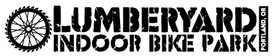

About Me
My Favorite Sports
I'm wild about fringe sports. Stuff that you've heard of but never tried. Sports that are for long-haired hippies and skate rats. Well, call me a Gen-Xer. That's just how I like it.
Here are my favorite sports, in chronological order of my introduction to them:
- Rock Climbing
- Disc Golf
- BMX Biking
Rock Climbing
I started climbing in 2000 at the age of 20 with my college friend Drew. We learned at a local Pittsburgh rock climbing gym that had a bouldering wall and some top-rope routes. We mostly climbed on the bouldering wall. I loved bouldering becuase of the problem solving aspect of it. It felt like solving a puzzle.
In early 2003, Drew and I took a 2-month road trip around the western and southern edges of the USA. Most of our stopping points were outdoor bouldering areas. Some of the highlights included Yosemite, Joshua Tree, Hueco Tanks, and a sweet sandstone boulder field in Alabama. This trip was one of the highlights of the time I spent rock climbing.
Another great bouldering destination is at Squamish, British Columbia. Here is a video of my ascent of a favorite climb of mine.
Disc Golf
In 2005, I moved to Portland and found that rock climbing, specifically bouldering outdoors, was not in high supply. It was then that my friend Dave G introduced me to the support of Disc Golf. At the time we were playing for fun and we called it "frolf" (a slang term that combines the words frisbee and golf).
After playing for fun for five years I followed my friend into the competitive side of the sport. I began doing drills and practicing different shot shapes. I worked on my distance in the field, and at my strongest I could throw 380 feet. I had been bitten by "the bug" and I was serious about frolf the sport of Disc Golf.
Over the 8 years I have been serious about disc golf, the sport has been growing in leaps and bounds. There are professional athletes whom I follow as they compete in the Disc Golf National Tour and the Disc Golf Pro Tour. The coverage airs on YouTube for free and I have spent countless hours watching post-production coverage of my favorite players competing in weekend long tournaments.
Here are some of my favorite pro players:
- Eagle McMahon
- Catrina Allen
- Paul McBeth
- Nate Sexton
- Kevin Jones
BMX Biking
I got into BMX biking because of my son. Some friends had recommended a bike park to us that was fun for kids to ride at. It was called "The Lumberyard". I went there with my son who was 4 at the time, and eventually, I would ride with him. It was a fun thing to play around with.
 When my son was 7 he spent several months taking weekly classes at the lumberyard. During class hours, they offered a reduced rate for parents, and I took advantage of this. I met other parents who rode; we started riding together; we rode more and more. Some tips we got along the way from other riders and some of the coaches went a long way and we slowly improved our skills
Now I am almost good enough to keep up with my son!